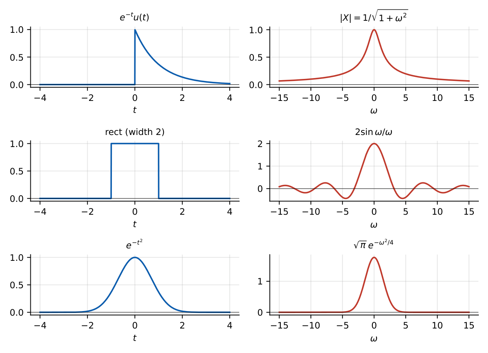
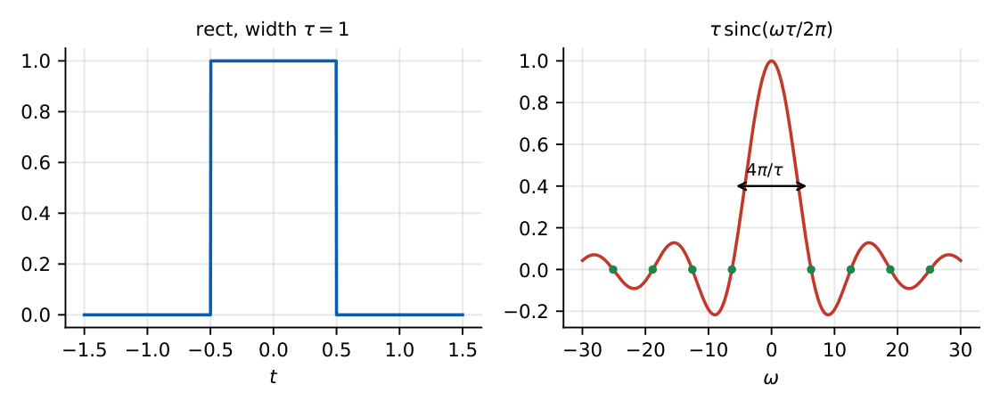
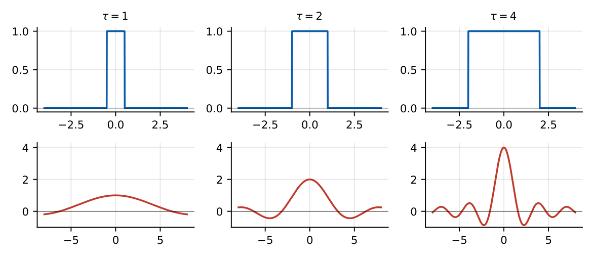
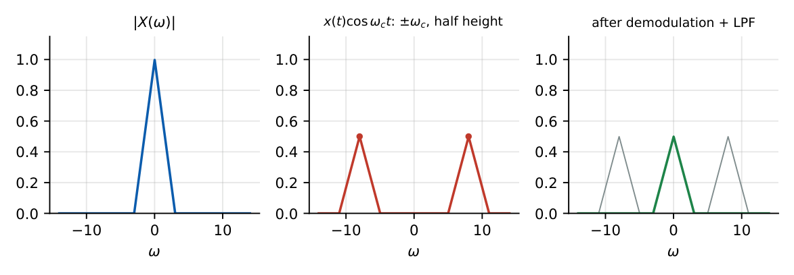

Continuous-Time Fourier Transform
In this chapter
Standard transform pairs, properties (shift, scaling, modulation, duality, differentiation), Parseval/energy, bandwidth of rect/sinc, and the effect of time-domain operations on the spectrum. About \(2\)–\(3\) marks per paper.
19.1 Fourier transform definition
\(X(j\omega)=\displaystyle\int_{-\infty}^{\infty}x(t)e^{-j\omega t}dt\), \(x(t)=\dfrac1{2\pi}\displaystyle\int_{-\infty}^{\infty}X(j\omega)e^{j\omega t}d\omega\).
\(X(j\omega)=|X|e^{j\angle X}\): magnitude spectrum and phase spectrum. Frequency in hertz: \(X(f)=\int x\,e^{-j2\pi ft}dt\), \(x=\int X(f)e^{j2\pi ft}df\) (no \(1/2\pi\)).
19.2 Fourier transform pair and existence
Sufficient (Dirichlet) conditions: \(x\) absolutely integrable, finite number of discontinuities/extrema. Power signals (constants, sinusoids, steps) have transforms only in the generalised sense (with impulses). The FT is the Laplace transform on the \(j\omega\) axis: \(X(j\omega)=X(s)|_{s=j\omega}\) if the ROC contains the \(j\omega\) axis.
19.3 Important transform pairs
1.5
| \(x(t)\) | \(X(j\omega)\) |
|---|---|
| \(\delta(t)\) | \(1\) |
| \(1\) | \(2\pi\delta(\omega)\) |
| \(\delta(t-t_0)\) | \(e^{-j\omega t_0}\) |
| \(e^{j\omega_0t}\) | \(2\pi\delta(\omega-\omega_0)\) |
| \(\cos\omega_0t\) | \(\pi[\delta(\omega-\omega_0)+\delta(\omega+\omega_0)]\) |
| \(\sin\omega_0t\) | \(\dfrac\pi j[\delta(\omega-\omega_0)-\delta(\omega+\omega_0)]\) |
| \(u(t)\) | \(\pi\delta(\omega)+\dfrac1{j\omega}\) |
| \(\mathrm{sgn}(t)\) | \(\dfrac2{j\omega}\) |
| \(e^{-at}u(t)\), \(a>0\) | \(\dfrac1{a+j\omega}\) |
| \(te^{-at}u(t)\) | \(\dfrac1{(a+j\omega)^2}\) |
| \(e^{-a|t|}\) | \(\dfrac{2a}{a^2+\omega^2}\) |
| \(\rect(t/\tau)\) (width \(\tau\)) | \(\tau\,\sinc\!\left(\dfrac{\omega\tau}{2\pi}\right)=\dfrac{2\sin(\omega\tau/2)}{\omega}\) |
| \(\tri(t/\tau)\) (base \(2\tau\)) | \(\tau\,\sinc^2\!\left(\dfrac{\omega\tau}{2\pi}\right)\) |
| \(\dfrac{\sin Wt}{\pi t}\) | \(\rect\!\left(\dfrac{\omega}{2W}\right)\) |
| \(e^{-at^2}\) | \(\sqrt{\dfrac\pi a}\,e^{-\omega^2/4a}\) |
| \(\displaystyle\sum_n\delta(t-nT)\) | \(\dfrac{2\pi}{T}\displaystyle\sum_k\delta\!\left(\omega-\dfrac{2\pi k}T\right)\) |

\(x=e^{-2t}u(t)\): \(X=\dfrac1{2+j\omega}\), \(|X|=\dfrac1{\sqrt{4+\omega^2}}\), \(\angle X=-\tan^{-1}(\omega/2)\); at \(\omega=2\): \(|X|=0.354\), \(\angle X=-45^\circ\).
\(x=\rect(t/2)\) (\(|t|<1\), width \(2\)): \(X=\dfrac{2\sin\omega}{\omega}\); \(X(0)=2\) (area), first null at \(\omega=\pi\).
\(x=\delta(t)+\delta(t-1)\): \(X=1+e^{-j\omega}=2\cos(\omega/2)\,e^{-j\omega/2}\), \(|X|=2|\cos(\omega/2)|\).

19.4 Fourier-transform properties
1.45
| Property | Time domain | Frequency domain |
|---|---|---|
| Linearity | \(ax+by\) | \(aX+bY\) |
| Time shift | \(x(t-t_0)\) | \(e^{-j\omega t_0}X\) |
| Frequency shift (modulation) | \(e^{j\omega_0t}x(t)\) | \(X(j(\omega-\omega_0))\) |
| Scaling | \(x(at)\) | \(\dfrac1{|a|}X\!\left(\dfrac{j\omega}a\right)\) |
| Time reversal | \(x(-t)\) | \(X(-j\omega)\) |
| Conjugation | \(x^*(t)\) | \(X^*(-j\omega)\) |
| Differentiation | \(dx/dt\) | \(j\omega X\) |
| Integration | \(\int_{-\infty}^tx\) | \(\dfrac{X}{j\omega}+\pi X(0)\delta(\omega)\) |
| Frequency differentiation | \(t\,x(t)\) | \(j\,dX/d\omega\) |
| Convolution | \(x*y\) | \(XY\) |
| Multiplication | \(xy\) | \(\dfrac1{2\pi}X*Y\) |
| Duality | \(X(t)\) | \(2\pi x(-\omega)\) |
| Modulation by cosine | \(x(t)\cos\omega_0t\) | \(\tfrac12[X(\omega-\omega_0)+X(\omega+\omega_0)]\) |
\(X(-j\omega)=X^*(j\omega)\); \(|X|\) even, \(\angle X\) odd; \(\Re X\) even, \(\Im X\) odd. If \(x\) is also even, \(X\) is real and even; if odd, \(X\) is purely imaginary and odd. \(X(0)=\int x\,dt\), \(x(0)=\frac1{2\pi}\int X\,d\omega\).


19.5 Duality, Parseval’s relation, ESD and PSD
Parseval (energy signals): \(E=\displaystyle\int|x|^2dt=\dfrac1{2\pi}\int|X(j\omega)|^2d\omega=\int|X(f)|^2df\).
Energy spectral density: \(\Psi(\omega)=|X(j\omega)|^2\). Power spectral density of a periodic signal: \(S(\omega)=2\pi\sum_k|c_k|^2\delta(\omega-k\omega_0)\); autocorrelation \(R(\tau)\leftrightarrow S(\omega)\) (Wiener–Khinchin).
\(x=e^{-t}u(t)\): \(E=\int_0^\infty e^{-2t}dt=\tfrac12\); and \(\dfrac1{2\pi}\int\dfrac{d\omega}{1+\omega^2}=\dfrac1{2\pi}\cdot\pi=\tfrac12\). ✓
Duality: \(\sinc(t)=\dfrac{\sin\pi t}{\pi t}\leftrightarrow\rect\!\left(\dfrac\omega{2\pi}\right)\): an ideal low-pass with cutoff \(\omega=\pi\).
(i) \(\sinc\) normalisation: \(\sinc(x)=\sin(\pi x)/\pi x\) (GATE) versus \(\mathrm{Sa}(x)=\sin x/x\). Always convert. (ii) Scaling gives \(\frac1{|a|}\) with absolute value. (iii) Time shift changes only the phase, not \(|X|\). (iv) The FT of a periodic signal is an impulse train with weights \(2\pi c_k\). (v) \(\int x=X(0)\), but \(u(t)\) has a \(\pi\delta(\omega)\) term as well.
Q1. The FT of \(\delta(t-2)\) is (A) \(e^{-j2\omega}\) (B) \(e^{j2\omega}\) (C) \(2\pi\delta(\omega-2)\) (D) \(1\).
Q2. Multiplication in the time domain corresponds to (A) multiplication in frequency (B) convolution in frequency (with \(\frac1{2\pi}\)) (C) division (D) shift.
Q3. The FT of \(e^{-3t}u(t)\) is (A) \(\frac1{3-j\omega}\) (B) \(\frac1{3+j\omega}\) (C) \(\frac{3}{9+\omega^2}\) (D) \(\frac{1}{j\omega}\).
Answers: Q1 (A). Q2 (B). Q3 (B).
Q4. The FT of \(x(t)=e^{-|t|}\) evaluated at \(\omega=1\) is (A) \(2\) (B) \(1\) (C) \(0.5\) (D) \(\frac12\sqrt2\).
Q5. If \(x(t)\leftrightarrow X(j\omega)\), then \(x(2t)\) has a spectrum (A) \(\frac12X(j\omega/2)\) (B) \(2X(2j\omega)\) (C) \(\frac12X(2j\omega)\) (D) \(X(j\omega)e^{-j2\omega}\).
Answers: Q4 (B): \(2/(1+\omega^2)=1\). Q5 (A).
Q6. The energy of \(e^{-t}u(t)\) computed from its spectrum is .
Q7. A rectangular pulse of amplitude \(3\) and duration \(4\) s has \(X(0)=\) .
Answers: Q6: \(0.5\). Q7: area \(=12\).
Q8. Which are true? (A) A time-limited signal cannot be band-limited. (B) \(|X(j\omega)|\) is even for real \(x\). (C) A real, even \(x\) has real \(X\). (D) Time shift changes \(|X|\).
Answers: Q8: (A), (B), (C).
(i) Wrong pair for \(\rect\) and \(\sinc\) normalisation. (ii) \(\omega\) versus \(f\) (factors of \(2\pi\)). (iii) Forgetting the impulse term for \(u(t)\) and constants. (iv) Using Parseval without the \(\frac1{2\pi}\) in \(\omega\).
T1. FT of \(x(t)=\cos(10t)\,\rect(t/2)\)? T2. Find \(x(t)\) if \(X=\rect(\omega/4)\) (unit-height, \(|\omega|<2\)).
Answers: T1: \(\tfrac12[X_r(\omega-10)+X_r(\omega+10)]\) with \(X_r=2\sin\omega/\omega\). T2: \(x(t)=\dfrac1{2\pi}\displaystyle\int_{-2}^{2}e^{j\omega t}d\omega=\dfrac{\sin2t}{\pi t}\).
- \(X=\int xe^{-j\omega t}\); \(x=\frac1{2\pi}\int Xe^{j\omega t}\). \(\delta\leftrightarrow1\), \(1\leftrightarrow2\pi\delta\), \(e^{-at}u\leftrightarrow\frac1{a+j\omega}\), \(\rect(t/\tau)\leftrightarrow\tau\sinc(\omega\tau/2\pi)\).
- Shift \(\to e^{-j\omega t_0}\); modulation \(\to X(\omega-\omega_0)\); scaling \(\frac1{|a|}X(\omega/a)\); \(d/dt\to j\omega\); \(*\leftrightarrow\times\).
- Parseval: \(E=\frac1{2\pi}\int|X|^2\). Real \(x\): \(|X|\) even, phase odd.
- Narrow in time \(\Leftrightarrow\) wide in frequency.